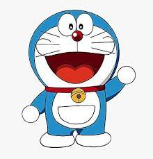
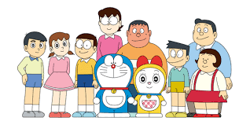
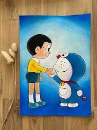
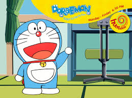
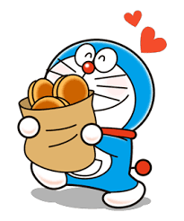
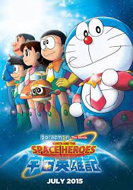
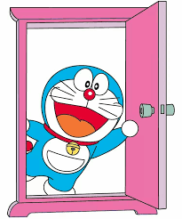
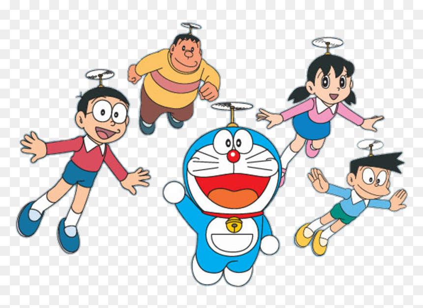
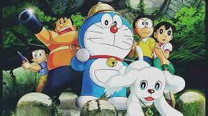

DORAEMON-The Legend of the Sun King
Little Introduction:
Doraemon (ドラえもん) is a Japanese manga series written and illustrated by Fujiko F. Fujio. The manga was first serialized in December 1969, with its 1,345 individual chapters compiled into 45 tankōbon volumes and published by Shogakukan from 1970 to 1996. The story revolves around an earless robotic cat named Doraemon, who travels back in time from the 22nd century to aid a boy named Nobita Nobi.
Doraemon is a Japanese anime character.
About Him
The Doraemon manga series was first published in December 1969 in six different magazines.
The manga spawned a media franchise. Three anime TV series have been adapted in 1973, 1979, and 2005. Additionally, Shin-Ei Animation has produced over forty animated films, including two 3D computer animated films, all of which are distributed by Toho. Various types of merchandise and media have been developed, including soundtrack albums, video games, and musicals. The manga series was licensed for an English language release in North America, via Amazon Kindle, by a collaboration of Fujiko F. Fujio Pro with Voyager Japan and AltJapan Co., Ltd. The anime series was licensed by Disney for an English-language release in North America in 2014, and LUK International in Europe, the Middle East and Africa.
Doraemon was well-received by critics and became a hit in many Asian countries. It won numerous awards, including the Japan Cartoonists Association Award in 1973 and 1994, the Shogakukan Manga Award for children's manga in 1982, and the Tezuka Osamu Cultural Prize in 1997. By 2019, it has sold over 250 million copies worldwide, becoming one of the best-selling manga series in history. The Doraemon character has been viewed as a Japanese cultural icon, and was appointed as the first "anime ambassador" in 2008 by the country's Foreign Ministry. "
Doraemon with Nobitha
Nobita Nobi (野比のび太, Nobi Nobita) is a fictional character in the Doraemon anime and manga series created by Fujiko Fujio, the pen name of writing team Hiroshi Fujimoto and Motoo Abiko. He is so the main character in The Doraemons (special version). Known as Sidney, Specky, Nobi Nobi[citation needed] and Noby, in some of the English localizations of the anime, Nobita is usually depicted as an elementary school student in Tokyo's Nerima Ward and the only child of Nobisuke and Tamako Nobi, who is perpetually looked after by the series' title character, a robotic cat from the future sent back in time by Nobita's descendant.
Nobita's closest friend is Shizuka Minamoto,who also serves as his romantic interest. Nobita is usually tormented by the bullying Takeshi Goda (nicknamed "Gian"), and the cunning and arrogant Suneo Honekawa. A typical story consists of Doraemon using one of his gadgets in order to assist Nobita in various ways, often causing more trouble than he was trying to solve.
Doraemon 1979 anime (Original Series)
- "Doraemon: Nobita's Dinosaur" - 15 March 1980
- "Doraemon: The Records of Nobita, Spaceblazer" - 14 March 1981
- "Doraemon: Nobita and the Haunts of Evil" - 13 March 1982
- "Doraemon: Nobita and the Castle of the Undersea Devil" - 12 March 1983
- "Doraemon: Nobita's Great Adventure into the Underworld" - 17 March 1984
- "Doraemon: Nobita's Little Star Wars" - 16 March 1985
- "Doraemon: Nobita and the Steel Troops" - 15 March, 1986
- "Doraemon: Nobita and the Knights on Dinosaurs" - 14 March 1987
- "Doraemon: The Record of Nobita's Parallel Visit to the West" - 12 March 1988
- "Doraemon: Nobita and the Birth of Japan" - 11 March 1989
- "Doraemon: Nobita and the Animal Planet" - 10 March 1990
- "Doraemon: Nobita's Dorabian Nights" - 9 March 1991
- "Doraemon: Nobita and the Kingdom of Clouds" - 7 March 1992
- "Doraemon: Nobita and the Tin Labyrinth" - 6 March 1993
- "Doraemon: Nobita's Three Visionary Swordsmen" - 12 March 1994
- "Doraemon: Nobita's Diary of the Creation of the World" - 4 March 1995
- "Doraemon: Nobita and the Galaxy Super-express" - 2 March 1996
- "Doraemon: Nobita and the Spiral City" - 8 March 1997
- "Doraemon: Nobita's Great Adventure in the South Seas" - 7 March 1998
- "Doraemon: Nobita Drifts in the Universe" - 6 March 1999
- "Doraemon: Nobita and the Legend of the Sun King" - 4 March 2000
- "Doraemon: Nobita and the Winged Braves" - 10 March 2001
- "Doraemon: Nobita in the Robot Kingdom" - 9 March 2002
- "Doraemon: Nobita and the Windmasters" - 8 March 2003
- "Doraemon: Nobita in the Wan-Nyan Spacetime Odyssey" - 7 March 2004
Doraemon Images:





